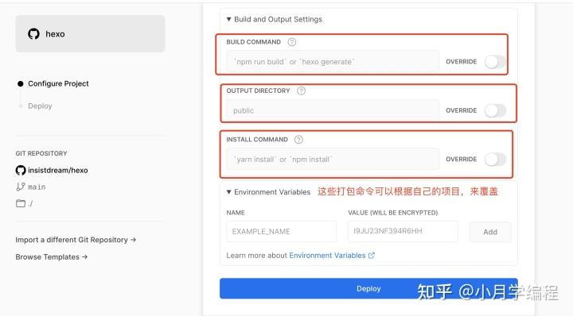
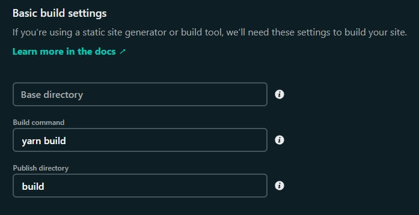
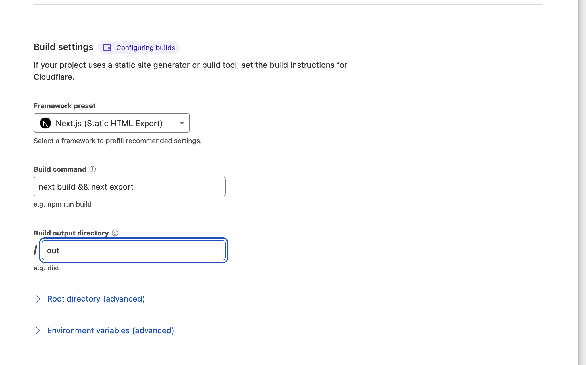

前言
RTheme虽然使用了部分JavaScript脚本来处理主题构建页面中的一些功能（搜索，Feed生成），但其本质还是纯Html。 主题默认是使用Github Action来完成脚本功能处理，本身Github Action是个好东西，但它的操作是在提交完文件后直接进行的，这样会引起仓库文件两次提交。
所以当你把这个仓库直接部署到Vercel这类云函数平台时，就会遇到一个问题：重复构建（Vercel进行部署流程两次），Vercel针对免费用户每天是限制构建次数100次，也就是说如果你这样用，每天你的站点最多只能更新50次，虽然一般人并不会一天更新50次站点。
可是我还遇到一个难受的问题：本地编辑需要多次Git Pull仓库，因为仓库会进行两次构建，所以我在本地编辑站点每次提交仓库前都需要进行一次Git Pull来拉取一次仓库更改，当然我们可以本地生成文件，但这不符合我懒惰（不是）的精神
原因也很明了：你修改了文件，Vercel检测到仓库文件变动，进行页面构建；然后GitHub Action检测到仓库文件变动，也做了构建，但一般它的构建时间会比Vercel构建页面时间要长，因为Vercel只需要处理HTML站点，而GitHub Action则需要处理三个脚本的运行，所以时间略长，而且Vercel因为比Action处理快，所以我们也等不到Vercel发现这个构建是重复的自动取消，理论上最优的解决方法其实是把仓库拆出一个Page分支，或者拆分仓库，把生成后的文件放到另一个仓库去，这样确实可以避免两次重复提交。但这对新手小白并不友好，所以我们也可以选择不用。
简单总结
把上面那一堆废话总结下其实就是：
- 本地修改仓库每次提交都要进行一次Git Pull
- Vercel等云函数平台会重复两次构建，浪费平台额度
准备工作
- 把GitHub Action先关掉
Vercel
优化Vercel的部署流程并不难，其实就是把本应交给Action的流程转交给Vercel就好
打开你的项目基本设置，你能看到类似下图的东西

上方模板应该是OTHER，然后我们打开BUILD COMMAND和INSTALL COMMAND右边的OVERRIDE让我们能够覆盖默认指令
然后INSTALL COMMAND设置为：
npm install
BUILD COMMAND设置为：
cd program && node search.js && node feed.js && node fileList.js
这样，我们就让Vercel和GitHub Action完成了部署的交接，此时修改仓库你就会看到，只进行了一次构建
Netlify
Netlify大体与Vercel相似，但它只有部署指令的设置，因为国内访问稳定性与速度不佳我也没试过。不过应该是：
把Build Command设置为
cd program && node search.js && node feed.js && node fileList.js
应该吧，如果有问题请在评论区提出或指正。
Cloudflare Page
跟Netlify一样，他也只有部署命令的设置

框架预设选择无，部署命令一样是：
cd program && node search.js && node feed.js && node fileList.js
以上就是几个主流的静态页面托管的部署设置了，如果你有其他想法也可以在评论区提出或指出问题